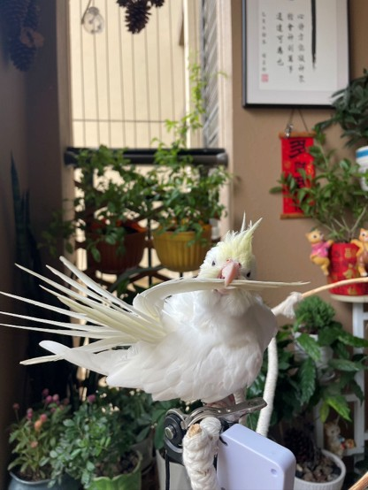
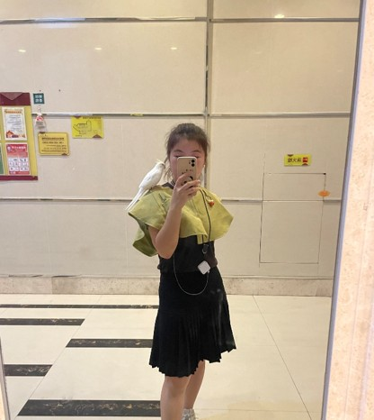

金吉
金冠百趴玄凤鹦鹉，会说"你好""恭喜发财""拜拜"，会唱《幸福拍手歌》和"叽咕叽"。温柔胆小，极度亲人，是无数养鸟人心中的"治愈小鸟"

金冠百趴玄凤鹦鹉，会说"你好""恭喜发财""拜拜"，会唱《幸福拍手歌》和"叽咕叽"。温柔胆小，极度亲人，是无数养鸟人心中的"治愈小鸟"
金吉是一只典型的中小型长尾鹦鹉，体型小巧圆润，尾巴修长优美。最引人注目的特征莫过于头顶那撮可立可收的羽冠——它就像情绪的"晴雨表"，立起来时代表好奇或警惕，平贴时则表示放松惬意。金冠百趴的配色独具特色，拥有一身柔和的金黄色头冠与洁白的体羽，整体气质温润如玉，辨识度极高。
金冠百趴的独特配色加上标志性的羽冠，让金吉在一众鹦鹉中脱颖而出。
金吉性格腼腆但非常粘人，一旦建立信任就会主动靠近，认主典型的"温柔型"伴侣鹦鹉。
相比大型鹦鹉，玄凤的叫声轻柔悦耳不易扰民，是家庭饲养的绝佳选择。
金吉身体素质好适应能力强，只要日常照料得当很少生病让人省心。
作为公玄凤，金吉天生具有模仿旋律的天赋，会吹多首口哨曲目，是家中一道独特的音乐风景。
金吉的日常饮食以谷物粮➕蛋小米为主食，这是玄凤鹦鹉营养均衡的基础。辅食方面搭配少量新鲜蔬菜补充维生素和膳食纤维。在日常保健上，主人需要时常观察金吉的肠胃状况，适时补充益生菌和电解质，确保健康。

谷物粮加蛋小米为主，搭配蔬菜水果，辅以益生菌、电解质保健。饮食结构清晰，新手也能轻松掌握。
每天抽出固定时间与金吉互动、放风、训练口哨，这不仅是娱乐，更是建立深厚情感纽带的关键。
饮水每日更换，笼底托盘定期清理，栖架和食具每周消毒，保持卫生是预防疾病的第一道防线。
玄凤喜欢水浴，每周提供一次浅水盆让其自行沐浴，或用喷雾瓶轻柔喷湿羽毛，保持羽毛光泽与健康。
玄凤鹦鹉寿命可达15到20年，是一份长久的陪伴承诺。金吉将用十余载的时光，温柔地守护在主人身边。
金吉的日常充满了探索与欢乐。喜欢在笼外自由活动，探索新玩具，享受与主人互动的每一刻，安静地站在主人肩头陪伴，总能用最简单的方式治愈人心。

